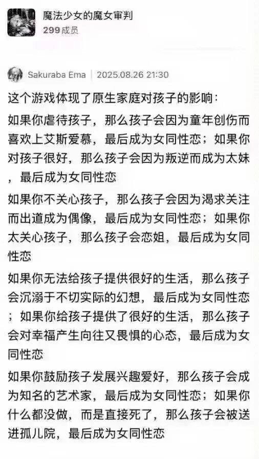

这个游戏体现了原生家庭对孩子的影响：
如果你虐待孩子，那么孩子会因为童年创伤而喜欢上一遍遍受虐忍耐，最后成为舞萌痴；如果你对孩子很好，那么孩子会利用闲暇来成为机厅小常客，最后成为舞萌痴。
如果你不关心孩子，那么孩子会因为渴求关注而锻炼成为大神，最后成为舞萌痴；如果你太关心孩子，那么孩子会需要地方安静逃避，最后成为舞萌痴。
如果你无法给孩子提供很好的生活，那么孩子会沉溺于不切实际的幻想，最后成为舞萌痴；如果你给孩子提供了很好的生活，那么孩子会对幸福产生向往又畏惧的心态，最后成为舞萌痴。
如果你鼓励孩子发展兴趣爱好，那么孩子会成为知名的曲师谱师绘师，最后成为舞萌痴；如果你扼制孩子的发展自由，那么终于自由的时候孩子只是无从选择而被人群裹挟，最后成为舞萌痴。
如果你虐待孩子，那么孩子会因为童年创伤而喜欢上一遍遍受虐忍耐，最后成为舞萌痴；如果你对孩子很好，那么孩子会利用闲暇来成为机厅小常客，最后成为舞萌痴。
如果你不关心孩子，那么孩子会因为渴求关注而锻炼成为大神，最后成为舞萌痴；如果你太关心孩子，那么孩子会需要地方安静逃避，最后成为舞萌痴。
如果你无法给孩子提供很好的生活，那么孩子会沉溺于不切实际的幻想，最后成为舞萌痴；如果你给孩子提供了很好的生活，那么孩子会对幸福产生向往又畏惧的心态，最后成为舞萌痴。
如果你鼓励孩子发展兴趣爱好，那么孩子会成为知名的曲师谱师绘师，最后成为舞萌痴；如果你扼制孩子的发展自由，那么终于自由的时候孩子只是无从选择而被人群裹挟，最后成为舞萌痴。
